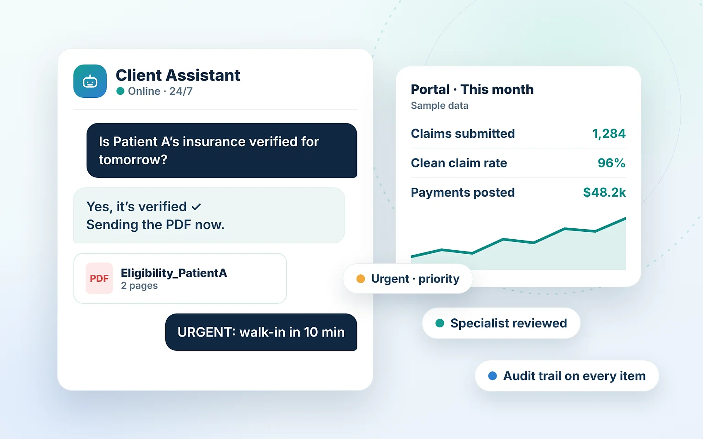

An AI assistant for every client. A team behind every answer.
Ask about patient status, insurance checks, urgent requests, A/R or reports in plain language. Answers arrive in seconds, and specialists review anything unusual.
Six AI helpers prepare the work.
Our team uses these helpers to prepare, check and prioritize routine work, so specialists can focus on exceptions, appeals and decisions.
Eligibility helper
Checks plan status, limits and missing details
Coding review helper
Compares codes with documentation for a coder
Claim quality helper
Spots missing fields and attachments before submission
Denial helper
Groups denials by cause and ranks appeals
A/R helper
Builds ranked worklists with owners
Insights helper
Turns billing data into priorities
From a question to a verified answer.
Ask
Anyone with access asks in plain language, any time.
Check
The assistant gathers details and runs its checks.
Review
A specialist confirms anything unusual. Urgent first.
Answer
You get the reply or PDF. Everything is logged.
One assistant for everyone at your practice.
Access follows your approved user list, so each person only sees what their role allows.
“Is tomorrow’s 9:30 patient covered?”
Physician, dentist, specialist · answered from your data
“What happened to the patient I sent yesterday?”
Physician, dentist, specialist · answered from your data
“Which of my claims are still unpaid?”
Physician, dentist, specialist · answered from your data
“Verify this walk-in, it’s urgent.”
Scheduling and check-in · answered from your data
“Send me the eligibility PDF.”
Scheduling and check-in · answered from your data
“Status of the MRI authorization?”
Scheduling and check-in · answered from your data
“How much A/R have we collected?”
Operations and reporting · answered from your data
“What payments were posted this week?”
Operations and reporting · answered from your data
“Send last month’s denial report.”
Operations and reporting · answered from your data
The assistant helps. People decide.
AI does
- Gathers details and runs configured checks
- Flags gaps, mismatches and urgent items
- Groups denials and ranks A/R worklists
- Drafts summaries and reports for review
Specialists do
- Verify anything unusual with the payer
- Make coding, appeal and payer-sensitive calls
- Own every exception to closure
- Review reports before they reach you
AI never does
- Make clinical decisions
- Change a claim or payment on its own
- Share one client’s data with another
- Replace a specialist’s judgment
One clean portal for your whole revenue cycle.
Live claims, A/R, denials and reports in a web portal that works on any device, with role-based access.
- Web portal on any device
- Live claims, A/R and denials
- PDF reports scheduled or on request
Sample client. Illustrative figures only.
Three principles behind the AI.
Expertise matters
Specialists, not software, make the sensitive calls. Every flag is reviewed by a named person.
Automation should be useful
AI handles the repeat checks so your day gets lighter: verification and status in seconds.
Visibility creates confidence
The portal shows what is happening and who owns it, with PDF reports on request.
AI assistant: common questions.
Is the AI assistant a replacement for the billing team?
No. The assistant answers routine questions and prepares work. Trained specialists review anything unusual and make every sensitive decision.
What can I ask the assistant?
Patient insurance status, whether a check is complete, urgent requests, claim status, A/R collected, payments posted and reports as PDF.
Does the assistant see other clients’ data?
No. Each client’s assistant only uses that client’s data, and access follows your approved user list.
What happens when the assistant is not sure?
It does not guess. It hands the question to a specialist and tells you it is being reviewed.
Do you use patient data to train AI models?
No. Patient data is used to deliver your services and not for training general-purpose models.
Can the assistant change a claim or payment?
No. Changes to claims and payments are made by trained staff and recorded in an audit trail.
Let’s set up your AI assistant.
Book a short discovery call. We will learn how your billing runs today and show you what a more connected approach could look like.

An assistant for every client.
Ask in plain language. Specialists review anything unusual.
Try a sample conversation
Synthetic sample data only.
AI does
- Gathers details and runs checks
- Flags gaps and urgent items
- Drafts summaries for review
Specialists do
- Verify anything unusual
- Make coding and appeal calls
- Own every exception
AI never does
- Make clinical decisions
- Change a claim or payment alone
- Share data between clients
Is the AI assistant a replacement for the billing team?
No. The assistant answers routine questions and prepares work. Trained specialists review anything unusual and make every sensitive decision.
What can I ask the assistant?
Patient insurance status, whether a check is complete, urgent requests, claim status, A/R collected, payments posted and reports as PDF.
Does the assistant see other clients’ data?
No. Each client’s assistant only uses that client’s data, and access follows your approved user list.
What happens when the assistant is not sure?
It does not guess. It hands the question to a specialist and tells you it is being reviewed.
Do you use patient data to train AI models?
No. Patient data is used to deliver your services and not for training general-purpose models.
Can the assistant change a claim or payment?
No. Changes to claims and payments are made by trained staff and recorded in an audit trail.
Let’s set up your assistant.
Book a short discovery call. No patient information needed.
Book a discovery callSample data only. No real patient information.